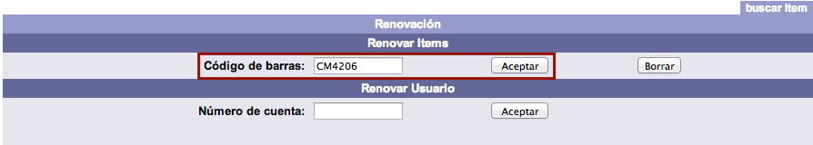
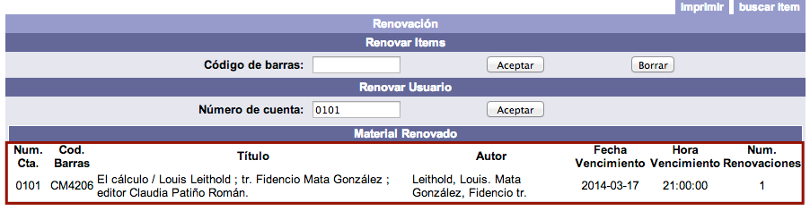
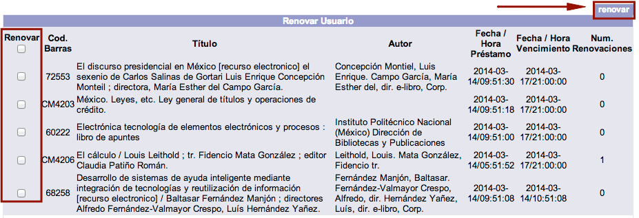

Consisten en la ampliación del período de préstamo de un material por la misma cantidad de días u horas utilizadas en el momento del préstamo original. Para que las renovaciones queden registradas en el sistema deben cumplirse las siguientes condiciones:
-
En las políticas de circulación de la institución deben estar autorizadas las renovaciones de préstamos.
-
El préstamo no debe estar vencido.
-
El usuario no debe estar bloqueado por multa económica o sanción administrativa (suspendido).
-
El material no debe estar reservado previamente por otro usuario.
-
El usuario debe tener sus privilegios vigentes.
Existen tres formas de registrar una renovación:
-
En el módulo de Circulación, sección Renovación, opción Renovar ítem.
-
En el módulo de Circulación, sección Renovación, opción Renovar usuario.
-
En el catálogo al público, sección Servicios al usuario, opción Información del usuario. NOTA: esta forma es llevada a cabo directamente por el usuario usando sus datos de conexión (número de cuenta y contraseña).

Procedimiento de renovación 1 (Renovar ítem)
Se utiliza cuando el usuario solicita la renovación de un único material.
- Hacer clic sobre la opción Renovación de la barra de herramientas del módulo.
- Escribir el número de código de barras del material en el campo de texto de la sección destinada para ello y hacer clic en el botón Aceptar.

- Al llevar a cabo la acción anterior, se despliegan en la parte inferior de la pantalla los datos del usuario y del material renovado, con la nueva fecha y hora de vencimiento, además del número de renovaciones efectuadas.

Procedimiento de renovación 2 (Renovar usuario)
Se utiliza cuando el usuario solicita la renovación de dos o más materiales. De esta manera, se pueden realizar todos los procesos en una sola transacción.
- Hacer clic sobre la opción Renovación de la barra de herramientas del módulo.
- Escribir el número de cuenta del usuario en el campo de texto de la sección destinada para ello y hacer clic en el botón Aceptar.

- Al llevar a cabo la acción anterior, se despliega la lista de los materiales que tiene prestados el usuario. Hacer clic en los cuadros de selección de aquellos ejemplares que se deseen renovar y, a continuación, en el botón renovar situado en la parte superior derecha de la pantalla.

- Para terminar, el sistema genera el mensaje informando de la ejecución de las renovaciones. Hacer clic en el botón Aceptar.

Alerta sobre el límite de renovaciones permitidas
En las políticas de circulación se define el número de renovaciones permitidas cuando el material no ha sido apartado por otro usuario y el préstamo se encuentra vigente. Esta cifra determina las veces que un usuario puede solicitar la renovación de un material que tiene prestado.
Cuando se ha registrado el número máximo de renovaciones, el sistema avisa al operador del módulo sobre esta situación y no registra la renovación solicitada.
En la opción Renovar ítem, el posible mensaje de alerta es el siguiente:
El usuario ha llegado al límite de renovaciones permitidas.
En la opción Renovar usuario, en cambio, al desplegar el sistema la lista de materiales prestados al usuario, en la parte izquierda de cada uno de ellos se muestra la indicación Límite renovaciones. Esto significa que no es posible registrar la renovación del material que tenga asociada dicha indicación.
Si se intenta registrar la renovación en cualquier caso, el posible mensaje de alerta es el siguiente:
No es posible renovar material alguno.